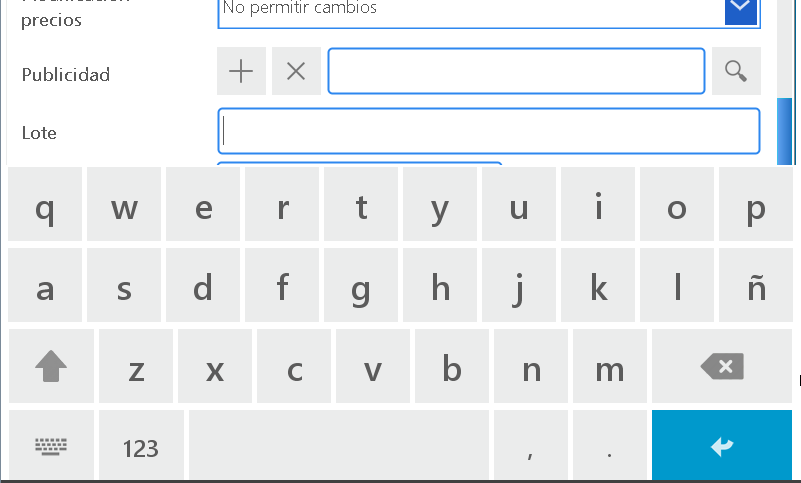
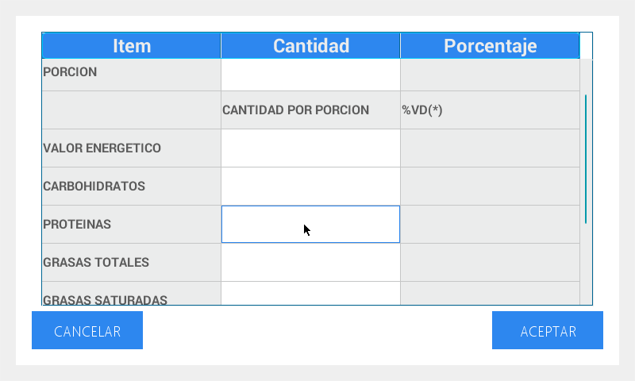
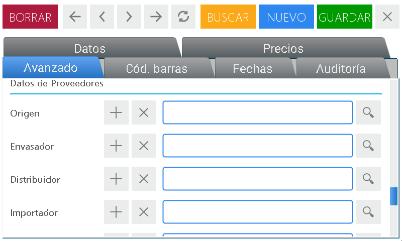
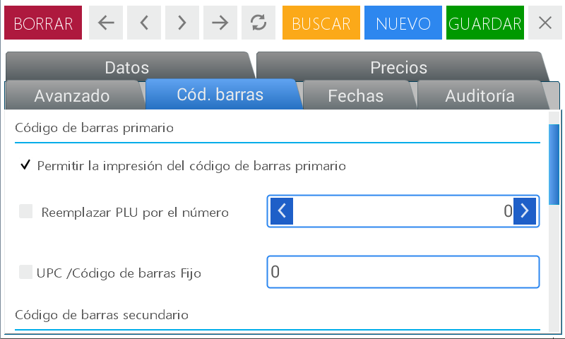
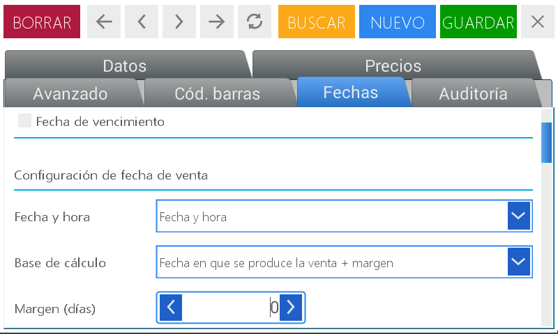
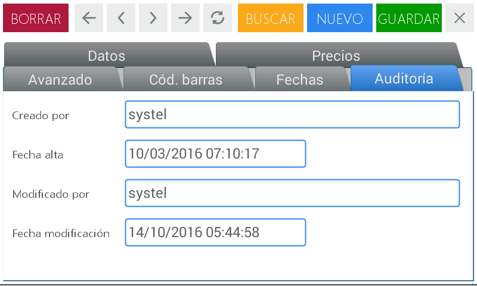
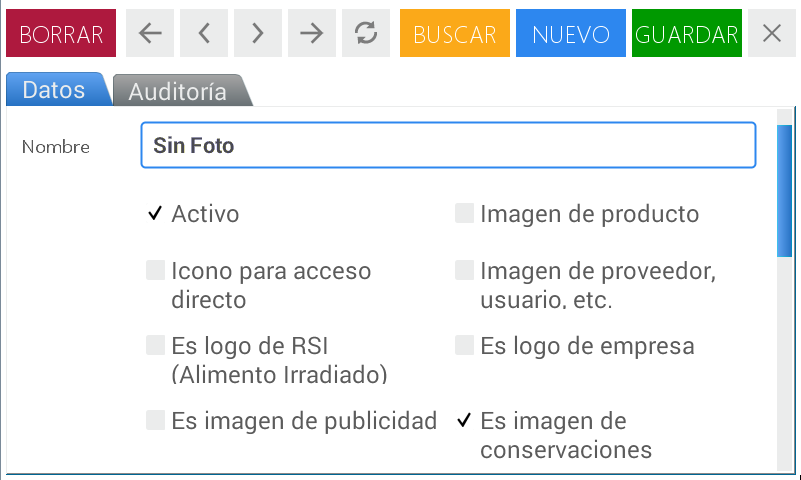
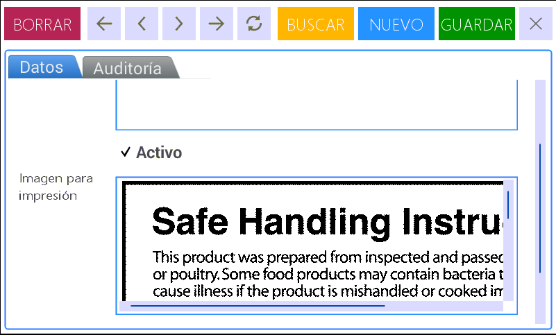
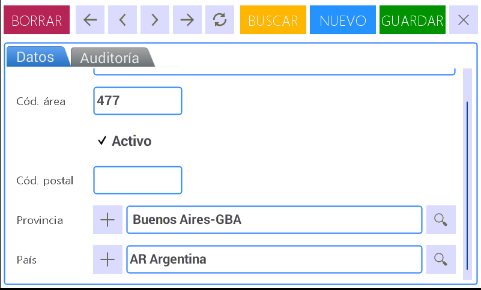

Create, Read, Update and Delete (CRUD)
It allows you to create, modify or delete items (PLU’s) from the equipment, set the parameters linked to them and assign direct access’ keys to the most frequently used items.

The following image represents the beginning of each subsection, which will be filled out with corresponding data. You can use it to select a preloaded item, or to create a new one.

PLU’s
In this option you can set and/or modify the information linked to every item (or PLU) and to assign the direct access’ keys to the most frequently used products.
This module is made up of 6 tabs:
- Data
- Prices
- Advanced
- Bar code
- Dates
- Auditing

We will first start by detailing the function that every tab fulfills and the description of the fields that comprise them.
- Data: PLU’s basic information.
- Code: there are three ways to codify a product -PLU’s code: It is generated by the user in the scale -ERP: related to each company
- Name: it is what the product is called
- Description: brief text that allows you to identify the product by some specific detail.
- Selling mode: The way in which the product is commercialized: by the unit or by weight.
- Department: sector the product belongs to
- Group: set of items grouped in some category.
- Price modification: it allows you to cancel or enable temporarily the price adjustment for an item.
- Advertisement: message that you can see on the screen before selling an item. It can fulfill the function of a specific notification or reminder alert. E.g.: If you buy 2 kg. of apples, you can get half a kilo for half the price.
- Lot: it accepts the addition of a lot number to a PLU.
- Tare: it allows you to discount the container’s weight, and to get the net weight of those products that need a container or a package to be weighted or delivered.
- Prices: it allows you to define the value of a product in a price list.
- Advanced: it allows you to complete information related to the products’ own characteristics, their traceability and supplier. It is also possible to establish the printing formats.
- Ingredients: It allows you to predefine the list of elements that comprise a product.
- Data of preservation: It allows you to specify a list of usage/ preservation recommendations for the products (E.g. temperature, humidity, stowage, etc.).
- **Nutritional table’s Spreadsheet **: it allows you to visualize and select nutritional tables that had already been created.
- Nutritional table data: it allows you to create the product’s nutritional table.
- General purpose additional data (bis): product’s additional information
- Image for printing: it allows you to link a lineal image to the product that can be visualized in the printed ticket.
- Printing formats: it allows you to select/opt for two kinds of printing formats. This option is only used when it is necessary to define a different format to the preset one. - a. Direct sale: printing format that it is issued when selling a product to a client. - b. Pre-packed: this mode allows you to label: - several products with the same code successively or - products that are weighted out of the clients’ sight (regulation nutritional information act)
- Traceability of meat: it allows to register the elements referred to the history of the animal from the beginning to the end of the commercialization chain.
- Supplier’s information: it allows you to see relevant information about the suppliers.
- Bar code: it allows you to select the printing of one or more bar codes according to the business’ needs.
- Dates: it allows you to establish the sell by date and time of the product manually (when selling a product) or you can use the format offered by the equipment. This information can be visualized in the printed label.
- Auditing: It allows you to see the information related to the registry of the data saved.
How to generate a PLU.
Hereunder, we will describe the steps you should follow to generate the PLU of a product following the tabs’ order detailed above.
Enter the menu by pressing the key
Select user and enter the password.
Press Enter
Choose the option CRUD’s located in the upper right quadrant of the screen.
You will see the complete module’s MENU on the screen. Press PLU’s
To start creating a new PLU, press New. This action is found in the navigation toolbar located in the upper margin
After doing this, you will be able to start filling out the detailed items in the first tab, Data. The rest of them are colored in gray and they are activated as you complete and save the required information in each case.
Once you are in the screen, Data, first, you should locate the field called Code. Here you can enter the product’s PLU’s number you want to create by using the arrows located in the box’s extremes or entering the number using the numeric keypad.
In the second field ERP Code it is possible to enter the identification of your company. You can execute this action using the equipment’s numeric keypad or pressing the key to see the alphanumeric keypad that allows you to enter letters and numbers.
To the left of the previously outlined fields you will see a white box.
Press on it to activate the search menu
Inside the box, select the image that corresponds to the new PLU scrolling through it in the right box or activating the search by keyword.
After checking the image you are going to use, press Select
In the space Name you can enter the term that will identify the product. Press the box to enable the space for writing, then the key to see the alphanumeric keypad on the screen, write the name of the product and press accept
Perform the same actions outlined in the previous step to complete the field Description Follow the same steps outlined in the previous step to complete the field, Description
In the field Sale Mode press the arrow located in the right extreme of the box. In this way the detachable menu is enable and it shows all the possibilities available in the equipment:
- Weighable
- Non-weighable
- Frozen
- Drained
Select the one you need by pressing on it.

The following fields called Departments and Groups work in the same way.
By pressing:
- the magnifying glass the search menu is enabled.
- the + symbol you can access the existent departments or groups.
- the X icon it allows you to delete the selected department or group from the screen to go back to performing the action.
In the field Price Modification press the arrow located in the right extreme of the box. In this way, you enable the detachable menu that shows two options:
- Disable modifications: it does not allow for the manual modification of the product’s price
- Enable the user for temporary modification: the equipment’s user can make a manual and provisional modification of the item’s value.
In the field, Advertisement can execute the following actions according to your needs:
- by pressing the magnifying glass the search menu is shown.
- In the right box you will see the detail of the advertisement previously created or you can expand the search by keyword.
- The + symbol allows you to access preexisting messages to make any modification.
- The X icon allows you to delete the selected advertisement from the screen to go back to performing the action.
To enter a lot number to the PLU, press the corresponding field to enable it. You can use the equipment’s numeric keypad or activate the alphanumeric one by pressing the key

If it is necessary, in the field Tare you can enter the product’s container’s weight. You can perform this step:
- using the arrows located in the extremes of the box or
- entering the number with the numeric keypad.
If the PLU to create corresponds to a Frozen product, you will also see the field, Water percentage. Follow the detailed steps in the previous item to fill it out.
Press Save

We continue with the next steps in the second tab, Prices

Press the box where you can see the price to enter the product’s value
Use the key to delete the price
Enter the price with the scale’s numeric keypad.
Then press Enter to confirm the modification
Now, we will explain how to enter information in each one of the items that comprise the third tab, Advanced.
The following fields called Ingredients and Preservation Data work in the same way.
By pressing:
- the magnifying glass the search menu is shown. In the right box you will see the detail of the loaded ingredients or preserving suggestions. Choose the ones that correspond to the PLU about to be created and then press select.
- The + symbol allows you to access the existent ingredient list or the preservation data to make any modification or enter new components.
In the field Nutritional Table Spreadsheet you can link the PLU to an already created nutritional table. To do that, press on the magnifying glass and perform the previously outlined steps to perform a search.

The space Nutritional Table Data shows an editor that allows you to place the corresponding nutritional values.

Press the quadrants colored in white to enable them and complete the necessary information using the numeric keypad or enabling the alphanumeric one with the key
The fields Additional data for general purposes and Additional Data for general purposes (bis) are activated in the same way: press the box to enable the space for writing, then the key to see the alphanumeric keypad on the screen, write the necessary additional information and press enter.
To use an Image for printing press on the blank field. Thus, a search menu will be opened. In the right box you will see the loaded images. Choose the one that corresponds to the PLU about to be created and then press select. Remember that you can expand the search using the option search by keyword.
Inside the line of Printing Formats, you will find two possibilities: Direct sale and Pre-packed. In both cases the actions available are executed in the same way:
- by pressing the magnifying glass the search menu is shown. In the right box you will see the sale modes already generated. Choose the one that corresponds to the PLU about to be created and then press select. Remember that you can expand the search using the option search by keyword.
- The X symbol allows you to delete the selected printing format from the screen.
The fields Traceability of the meat and the Supplier’s Information have several lines of information.


The actions available to select or complete the information in each one of them are the same ones:
- The magnifying glass enables the search menu with the created registries and can be expanded by keyword.
- The + symbol allows you to access already existent information to make any modification. In the case of Traceability of the meat the data from the module Countries is shown, and in the one of Supplier’s Information, the screen corresponding to Third Parties is enabled.
- The X symbol allows you to delete the selected information from the screen.
On completion press Save
We continue with the fourth tab Bar Code.

To activate and deactivate the available functions in this module of the menu you must press on the boxes colored in gray. When you do it the box disappears, and you will see a check mark.
In the line Replace PLU by the number you can use the arrows located in the box’s extremes or enter the number using the numeric keypad.
In the fields UPC/Fixed bar code and Fixed bar code press on the writing section to enable them:
- enter numbers with the numeric keypad.
- press to activate the alphanumeric keypad
Once you have completed all the required modifications press Save
We will go on with the tab located in the fifth place called Dates.
To understand its working better we will describe, as an example, the steps to follow to establish the sell by date of a product: ground meat commercialized in the shelves.

In the first item Calculation basis press the arrow located in the right extreme of the box to see the detachable menu.
Select the option Sell by date + margin
In the box Margin (Days) enter the amount of cap days for its consumption: 3 (three) days. To do that press the arrow three times until you can see the number three on the screen.
Another way to do it is by pressing the field to activate it, place the cursor behind the number or swipe your finger to check it, press to delete and then, enter the number three with the numeric keypad.
Continue filling out the data found in Setting of sale’s date.
Press the arrow located in the right extreme of the box Date and time. In this way, you enable the detachable menu that shows all the available options:
- Date and Time
- Only Date
- Only Time
Select the second option by pressing on it.
In the next field Calculation basis perform the actions outlined in the previous item and select Date in which the sale is executed + margin
In the box Margin (Days) enter the amount of days: 3 (three) following the steps previously outlined.
Then press Save
And finally, the Auditing tab that shows information related to the registry of the saved data.

Price Lists
It allows you to generate new price lists and link the items to them with the possibility of establishing a date of validity. The equipment has two preset default price lists.

Enter the menu by pressing the key
Select user and enter the password.
Press Enter
Choose the option CRUD’s located in the upper right quadrant of the screen.
You will see the complete module’s MENU on the screen. Press Price Lists
To start a creating a new price list press New.

After doing this, you will be able to start filling out the detailed items in the first field called Data. The rest of them are colored in gray and they are activated as you complete and save the required information in each case.
Once you are in the screen Data you will find the first field called Name. Here you can enter the term that will identify the new price’s list. For example, “Weeks’ discounts”, So press on the text field to activate it, and then the key to see the alphanumeric keypad on the screen.
In the field Description you can enter a brief text explaining the scope of the created price list. The actions to perform are the same that the ones outlined in the previous step.
When creating a price list there is always a check mark on the word Active. This means the equipment’s user will be able to select this list when he executes the sale of the products that are linked to it. If you wish that the new list is shown first when you execute the sale, press on the box By default.
You can also use the fields Valid from and Valid to to establish a validity date to the created price list:
- using the arrows located in the extremes of the box or
- entering the number with the numeric keypad. To do that you must first press the field to activate it.
Press Save to confirm the action.
A confirmation message will be shown. Press Enter
Images
In this field, it is possible to upload all the images that will be shown on the screen. This action can be done with a pen drive device.

Enter the menu by pressing the key
Select user and enter the password.
Press Enter
Choose the option CRUD’s located in the upper right quadrant of the screen.
You will see the complete module’s MENU on the screen. Press Images
To start with the upload of the images, press New.
After doing this, you will be able to start filling out the detailed items in the first tab, Data.
First, press the field Name to activate the writing space, then the key to see the alphanumeric keypad and enter the term that identifies the image for uploading.
The word Active has a check mark by default. Also select the option link to the image for uploading:
- Icon to access
- It is RSI’s logo
- Product’s image
- Supplier’s image, user, etc.
Press the next blank box to upload or modify the image.
After this action you will see the following screen
Press the arrow in the box Search in to select the source file.
In the field File’s Name enter the term that identifies the image. To do it press the key to activate the alphanumeric keypad.
Press Open
Advertisement
It allows you to see in the inferior sector of the scale’s display an advertisement message referring to your business or products, set according to your needs.

Enter the menu by pressing the key
Select user and enter the password.
Press Enter
Choose the option CRUD’s located in the upper right quadrant of the screen.
You will see the complete module’s MENU on the screen. Press Advertisement
To create the advertisement press New

After doing this, you will be able to start filling out the detailed items in the first tab, Data.
First, press the field Name to activate the writing space, then press the key to see the alphanumeric keypad and enter the term that identifies the advertisement.
Write the advertisement message activating the text field MESSAGE and follow the same already outlined steps.
Then select Active if you wish that the message is shown on the client’s display (not related to the any specific product) or choose It is advertisement for products if the message is associated to a specific product.
Press Save to confirm the action.
In the tab Auditing: the information related to the registry of the saved data is shown.
Users
In this point the CRUD’s of the users is managed, with the possibility of defining the different clearance levels for every one of them (sale, consultation, management)
Enter the menu by pressing the key
Select user and enter the password.
Press Enter
Choose the option CRUD’s located in the upper right quadrant of the screen.
You will see the complete module’s MENU on the screen. Press Users
To create a user press New

After doing this, you will be able to start filling out the detailed items in the first tab, Data.
Complete the information about the user about to be created. Last names, Names, Description, User, Password and Confirm.
All the fields are used in the same way:
- press on the space for entering a text to activate it,
- then the key to see the alphanumeric keypad,
- enter the necessary letters and
- press Enter to confirm
The word Active has a check mark by default.
If you wish to limit the clearance of a user so that it cannot perform any action with the scale, select Blocked.
In the field Role, press the magnifying glass to enable the detachable menu and select the function this user can perform:
- Administrator - Consult - Salesperson
Continue filling the boxes out with the corresponding information such as e-mail address and Telephone following the previously outlined steps.
Press Save to confirm the action.
In the last tab Auditing, the information related to the registry of the saved data is shown.
Departments
It allows you to create, modify, and/or delete Departments (or sectors) which you will later link to the items (PLU’s). When you generate them, you will be able to gather the PLU’s in groups, making it easier to generate lists, sale reports, maintenance, and data updates.
Enter the menu by pressing the key
Select user and enter the password.
Press Enter.
Choose the option CRUD’s located in the upper right quadrant of the screen.
You will see the complete module’s MENU on the screen. Press Departments.
To start with the creation of a department, press New.
After doing this, you will be able to start filling out the detailed items in the first tab, Data.
Once you are in the screen, Data you will find the first field, Code. Here you can enter the number associated to the department about to be created.
The word Active has a check mark by default. When you wish to disable a department uncheck this action.
Activate the field Name to write the department’s name.
You can also select some of the preloaded default departments. To do this, press Search (located in the upper toolbar) and select the one you need:
- Cold cuts and dairy
- Meat products
- Vegetables
- Bakery
- Fish and Seafood
- Gift shop and Bazaar
- Generic sector
Press Save.
In the tab Auditing: the information related to the registry of the saved data is shown.
Groups
It allows you to create, modify, and/or delete Groups which you will later link to the items (PLU’s).

Enter the menu by pressing the key
Select user and enter the password.
Press Enter
Choose the option CRUD’s located in the upper right quadrant of the screen.
You will see the complete module’s MENU on the screen. Press Groups
To start with the creation of a Group, press New.

Once you are in the screen, Data you will find the first field, Code. Here you can enter the number associated to the group about to be created by activating the space for entering a text.
The word Active has a check mark by default. When you wish to disable a group uncheck this action.
Activate the field Name to write the group’s name.
To locate already created groups, press Search (located in the upper toolbar) and select the one you need:
Press Save.
In the tab Auditing: the information related to the registry of the saved data is shown.
Ingredients
It allows you to predefine the list of elements that comprise a product. These can be assigned, later on, in the setting of a PLU (and you will see them in the printed labels).
Enter the menu by pressing the key
Select user and enter the password.
Press Enter
Choose the option CRUD’s located in the upper right quadrant of the screen.
You will see the complete module’s MENU on the screen. Press Ingredients
To start with the creation of Ingredients, press New.
Once you are in the screen, Data, activate the field Name and enter the term that identifies the ingredient or group of elements that comprise the product.
Perform the same steps to complete the field Ingredients. Here you can enter the complete detail of the components.
The word Active has a check mark by default. When you wish to disable an ingredient uncheck this action.
Press Save.
In the tab Auditing: the information related to the registry of the saved data is shown.
Preservation
It allows you to specify a list of usage/ preservation recommendations for the products (E.g. temperature, humidity, stowage, etc.). These suggestions can be called after the creation/setting of a PLU (and you will see them in the printed labels).

Enter the menu by pressing the key
Select user and enter the password.
Press Enter
Choose the option CRUD’s located in the upper right quadrant of the screen.
You will see the complete module’s MENU on the screen. Press Preservation
To start a creating new Preservation data, press New.

Once you are in the screen, Data, activate the field Name and enter the term that identifies the type of preservation about to be created.
Perform the same steps to complete the field Preservation Data. Here you will be able to enter the complete detail of the indications related to the appropriate preservation of a product.
The word Active has a check mark by default. Select this option when you need to disable it.
Press Save
In the tab Auditing: the information related to the registry of the saved data is shown.
Third Parties
It allows you to create an agenda containing information (primary and secondary) about the people that are directly or indirectly linked to your business.

Enter the menu by pressing the key
Select the module CRUD’s
Press the access Third Parties
To start with the creation of a new registry, press New.

Once you are in the screen, Data, activate the field Name and complete with the corresponding data.
Perform the same steps to complete the next field Description
The word Active has a check mark by default. When you wish to disable any Third Party uncheck this option.
Among the available options in the field Type select the one that is linked to the profession or role of the entered person.
Finally, activate Tax-related identity to enter the corresponding data if necessary.

Then continue entering information by selecting the next tab Telephones and Addresses.
In the box Name select the one corresponding to the entered contact.
If the existent information needs to be modified in any way, press Modify

Modify the necessary data activating each field.
Press Save.
In the tab Auditing: the information related to the registry of the saved data is shown.
Currency
It allows you to define the monetary symbol (e.g. $, USD, etc.), as well as the decimal comma/point for the price. This setting is the one which will be shown in the receipts, sales printings or reports.
Enter the menu by pressing the key
Select the module CRUD’s
Press the access Currency
To start with the creation of a new registry, press New.

Once you are in the screen, Data, activate the field Symbol and enter the symbol that identifies the type of currency used.
Perform the same steps to complete the next field Description
The word Active has a check mark by default. When you wish to disable any monetary value uncheck this option.
Fill out the ISO Code activating said field.
And in the line Price precision enter the corresponding decimals.
Press Save.
To locate the already created registries press Search (located in the upper toolbar). To speed the search by ISO code or Description.
In the tab Auditing: the information related to the registry of the saved data is shown.
Countries
It allows you to fill out the information associated to the product’s country of origin.

Enter the menu by pressing the key
Select the module CRUD’s
Press the access Countries
To start with the creation of a new registry, press New.
Once you are in the screen, Data, activate the field Name and enter the name of the country.
Perform the same steps to complete the next field Description.
The word Active has a check mark by default. When you wish to disable any selected country select this option.
Fill out the ISO Code that identifies the country, by activating said field.
And in the line Currency you can select the search menu to locate the monetary values already created or press the + symbol to modify any of the existent ones.
Press Save.
To locate the already created registries choose the option Search (located in the upper toolbar). You can expand the search by ISO code or Description.
In the tab Auditing: the information related to the registry of the saved data is shown.
Provinces/States
It allows you to specify the information corresponding to the province or state where the product comes from.
Enter the menu by pressing the key
Select the module CRUD’s
Press the access Provinces/States
To start with the creation of a new registry, press New.
Once you are in the screen, Data, activate the field Name and enter the name of the province or state.
Perform the same steps to complete the next field Description.
The word Active has a check mark by default. When you wish to disable any selected Region select this option.
Press on the field Abbreviation to activate the space for entering a text and enter the acronym that identifies the provinces or states.
And in the line Country, select the search menu to locate the countries already created or press the + symbol to modify any of the existent ones.
Press Save
To locate the already created registries choose the option Search (located in the upper toolbar). You can shorten the search by Abbreviation or Name.

In the tab Auditing: the information related to the registry of the saved data is shown.
Cities
It allows you to enter the city where a product comes from.


Enter the menu by pressing the key
Select the module CRUD’s
Press the access Cities
To start with the creation of a new registry, press New
Once you are in the screen, Data, activate the field Name and enter the name of the city.
Perform the same steps to complete the next item ZIP Code.
The word Active has a check mark by default. When you wish to disable any selected city select this option.
Press on the field ZIP Code to activate the space for entering a text and enter the code that identifies the city.
The next two lines Province/State and Country are filled out in the same way:
- select the search menu to locate the already created provinces/states and countries or
- press the + symbol to modify some of the already existent ones.
Press Save
To locate the already created registries choose the option Search (located in the upper toolbar). You can shorten the search by Abbreviation or Name.
In the tab Auditing: the information related to the registry of the saved data is shown.